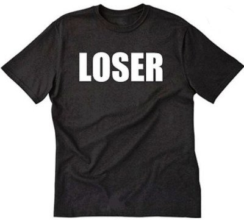

Where’s you? The real, true you, whatever that is?
For most of us, the immediate, obvious answer is, “Duh, I’m right here!”
And if asked what knows that you’re right there, perhaps the answer would be, “Sheesh Mind-Tickler, another stupid question. The brain knows.” Or maybe, “The mind knows.” Or, “The ego knows.”
Whichever answer, it’s as if there’s no possibility of anything other than you/brain/ego, the locus of everything, master of all it surveys.
Though that’s kind of like an ant saying, “I am all there is. There is nothing bigger than myself, nothing I don’t know, nothing I can’t see.” While meanwhile the much larger human, unseen and unnoticed, is watching the ant scurry.
So… just for fun, I wonder if the possibility could be considered, just for a moment, because there’s no harm in that, is there?, that there’s an awareness bigger than the You, more than skin, blood, hair, nerve endings and spinal fluid. Perhaps imagine that there’s a consciousness that’s more far-reaching than the body or sense of self-thingy that is constantly and unceasingly stealing credit for its own importance. If that were somehow so, how would the much smaller Me pull off a heist of such narrowed attention successfully?
Put another way, how can infinite vastness be reduced to a small, self-focused, self-centered, seemingly-all-there-is, of-course-it’s-right-here, very-certain-it-knows-stuff, much-smaller thing?
Aka the Me.
How is that clear sense of, “I’m right here!” created?
Well, in order for the sense of self to feel with such sureness that it’s the center of everything, options have to be narrowed. Focus has to be narrowed to one point. The Me point.
Because vastness is too everywhere, too amorphous, and too much bigger than what is trying to perceive it. It's incomprehensible for the Me. So there has to be a small, specific and pointable-to location.
But how?
Basically, it’s named. Identified. Described. It sounds like, “I am a good person, I am a loser, I am smart, I am lazy, I am weak, I am unlovable, I am unfairly treated, I am broken.”
Here I am, I am, I am.
Located, located, located.
Of course that takes lots of repetition, monitoring and convincing. The describing must continue at all times. “Damn I did it again. Loser. Loser. Loser.” Sort of like a salesman who doesn’t dare shut up and stop talking for a second, else his prospect might notice that the product is nothing but air.
Which is why self-description and monitoring rarely let up. (And why there’s always another thought to inquire into.)
So labels and identity provide a sense of location within the vastness of space. The words place us somewhere. That’s how we narrow down into “Right HERE.”
“Here’s me. The one who had harmful parents and a mean spouse, who doesn’t have enough money, who’s alone and unloved.”
Here’s Me, the focal point in all that spaciousness.
Which is fine. Because it turns out we need that sense of self. We need identity and roles and a story in order to function in this dream world.
Because vastness can’t drive, or feed the dog, or hug a child, catch a ball, drive a car, tie shoelaces. Vastness can’t sew a button. It has to be made it smaller.
Who knew? Despite all that inquiry, analysis and personal development, turns out the limiting of infinite options is not a problem but actually necessary in order to be a person, in order to exist as sense of self.
In order to BE.
Because we have to be located somewhere. Otherwise we're just space. And how do we hold onto that? There’s nothing to grab onto.
So there will continue to be roles and identity stories, which will often seem true and in need of defense, analysis and justification. We’ll continue to put on and take off roles like a t-shirt. Today the Bitch t-shirt. Tomorrow the Loser shirt. In between Winner! for a few minutes. On and off, on and off the t-shirt goes, placing You in the center of things.
Identity is vastness in a t-shirt. No big deal. We have to wear something.
So the few seconds of spaciousness we might get in between changing t-shirts? Yay for those! And perhaps also yay that they’re only brief respites.
Because otherwise it’s all just too big.
How lucky we are, having a cozy, comforting little place of limiting identity just for us.
Right here.
Ah. Here we are.
Located You
